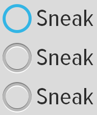
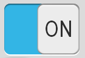

A Button represents a push-button widget. Push-buttons can be pressed or clicked by the user to perform an action. The Button class is the base class for creating buttons. The CompoundButton class extends the Button class. A compound button with two states, checked and unchecked. When the button is pressed or clicked, the state changes automatically. However, you typically should not instantiate a CompoundButton directly. Instead, you should use one of the following subclasses:
CheckBox
A checkbox is a specific type of two-states button that can be either checked or unchecked.
RadioButton
A radio button is a two-states button that can be either checked or unchecked. Radio buttons are normally used together in a RadioGroup. When several radio buttons live inside a radio group, checking one radio button unchecks all the others.
ToggleButton
A toggle button displays checked/unchecked states and is default accompanied with the text "ON" or "OFF".
In this section, you will create a button, using the Button widget.
void MyPage::onInit(Persistence* const p) {
// create Scene and LinearController
mpScene = Scene::SceneFactory(this);
gaia::ui::LinearController* layout = new gaia::ui::LinearController(this);
//create the Button widget
gaia::ui::Button* mpButton = new gaia::ui::Button(this);
// set button text
gaia::base::String* text = new gaia::base::String("Hello, World!");
mpButton->setText((*text));
// add thet Button to the LinearController
layout->addWidget(mpButton);
mpScene->attachController(layout);
mpScene->setupSceneLayout();
}
class MyBtnClickListener: public gaia::core::OnClickListener {
public:
MyBtnClickListener(gaia::core::Page* page){};
virtual ~MyBtnClickListener(){};
virtual void onClick(gaia::core::Widget* v){};
};
OnClickListener* listener = new MyBtnClickListener(this);
mpButton->setOnClickListener(listener);
In this section, you will create a checkbox for selecting items, using the CheckBox widget.
void MyPage::onInit(Persistence* const p) {
// create Scene and LinearController
mpScene = Scene::SceneFactory(this);
gaia::ui::LinearController* layout = new gaia::ui::LinearController(this);
//create the CheckBox widget
gaia::ui::CheckBox* mpCheckBox = new gaia::ui::CheckBox(this);
// set button text
gaia::base::String* text = new gaia::base::String("Hello, World!");
mpCheckBox->setText((*text));
// set state of this button is checked
mpCheckBox->setChecked(true);
// add the CheckBox to the LinearController
layout->addWidget(mpCheckBox);
mpScene->attachController(layout);
mpScene->setupSceneLayout();
}
class MyBtnCheckedListener: public gaia::ui::ICompoundBtnCheckedChangeListener {
public:
MyBtnCheckedListener(gaia::core::Page* page){};
virtual ~MyBtnCheckedListener(){};
virtual void onCheckedChanged(gaia::ui::CompoundButton* buttonView, bool isChecked){};
};
ICompoundBtnCheckedChangeListener* listener = new MyBtnCheckedListener(this);
mpCheckBox->setOnCheckedChangeListener(listener);

In this section, you will create two mutually-exclusive radio buttons (enabling one disables the other), using the RadioGroup and the RadioButton widgets.
void MyPage::onInit(Persistence* const p) {
// create Scene and LinearController
mpScene = Scene::SceneFactory(this);
gaia::ui::LinearController* layout = new gaia::ui::LinearController(this);
//create the RadioGroup widget
gaia::ui::RadioGroup* mpRadioGroup = new gaia::ui::RadioGroup(this);
// add RadioGroup to LinearController
layout->addWidget(mpRadioGroup);
mpScene->attachController(layout);
mpScene->setupSceneLayout();
}
gaia::ui::RadioButton* mpRadioButton = new gaia::ui::RadioButton(this);
// set RadioButton text
gaia::base::String* text = new gaia::base::String("Sneak");
mpRadioButton->setText((*text));
gaia::ui::RadioGroupLayoutParams* mpRadioGroupLayoutParams = new gaia::ui::RadioGroupLayoutParams(
ControllerParams::WRAP_CONTENT, ControllerParams::WRAP_CONTENT);
//Notice that before layout->addWidget(mpRadioGroup);
mpRadioGroup->addWidget(mpRadioButton, 0, mpRadioGroupLayoutParams);
class MyRadioCheckedChangeListener: public gaia::ui::IRadioGroupCheckedChangeListener {
public:
MyBtnCheckedListener(gaia::core::Page* page){};
virtual ~MyBtnCheckedListener(){};
virtual void onCheckedChanged(gaia::ui::RadioGroup* group, int checkedId){};
};
IRadioGroupCheckedChangeListener* listener = new MyRadioCheckedChangeListener(this);
mpRadioGroup->setOnCheckedChangeListener(listener);

In this section, you'll create a button used specifically for toggling between two states, using the ToggleButton widget.
void MyPage::onInit(Persistence* const p) {
// create Scene and LinearController
mpScene = Scene::SceneFactory(this);
gaia::ui::LinearController* layout = new gaia::ui::LinearController(this);
//create the ToggleButton widget
gaia::ui::ToggleButton* mpToggleButton = new gaia::ui::ToggleButton(this);
// set state of this button is checked
mpToggleButton->setChecked(true);
// add ToggleButton to LinearController
layout->addWidget(mpToggleButton);
mpScene->attachController(layout);
mpScene->setupSceneLayout();
}
class MyBtnCheckedListener: public gaia::ui::ICompoundBtnCheckedChangeListener {
public:
MyBtnCheckedListener(gaia::core::Page* page){};
virtual ~MyBtnCheckedListener(){};
virtual void onCheckedChanged(gaia::ui::CompoundButton* buttonView, bool isChecked){};
};
ICompoundBtnCheckedChangeListener* listener = new MyBtnCheckedListener(this);
mpToggleButton->setOnCheckedChangeListener(listener);